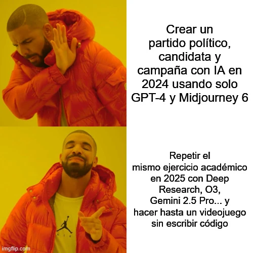

estrategIA #86 ·
Un año entre dos campañas simuladas
El contexto
La newsletter repitió un ejercicio académico de creación de un partido y una campaña con IA. Drake compara las herramientas de 2024 con las de 2025 para mostrar cuánto había cambiado la práctica, incluida la posibilidad de añadir un videojuego sin escribir código.
Publicado en: estrategIA #86 - Un año después, creamos otra campaña electoral con IA: repetimos el experimento para observar el avance real de la inteligencia artificial en la comunicación política
Leer el texto de la imagen
Crear un partido político, candidata y campaña con IA en 2024 usando solo GPT-4 y Midjourney 6 Repetir el mismo ejercicio académico en 2025 con Deep Research, O3, Gemini 2.5 Pro... y hacer hasta un videojuego sin escribir código
Marca de la herramienta visible en el original: imgflip.com.